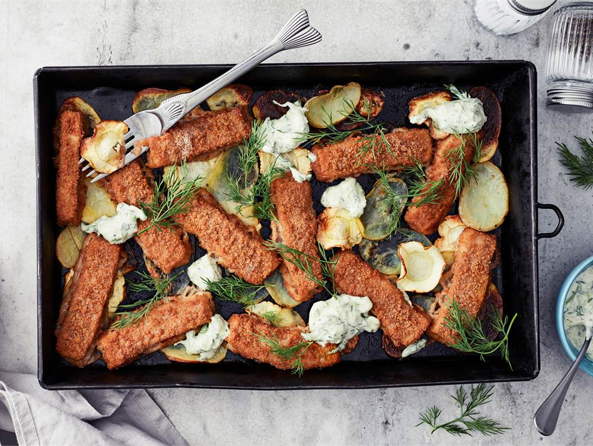

Fish Fingers and Root Vegetables Tray bake

A fish finger tray is a great snack for ski vacationers, for example. The
tray can be prepared in advance for lifting into the oven, and the oven
takes care of the rest when hunger strikes unexpectedly. The root
vegetables roast in the oven into chips, making them fun to dip into
cucumber sauce.
Ingredients
-
Approx. 500 g of root vegetables, e.g. potato, parsnip, and carrot
- 2 - 3 tbsp of Valio Oivariini liquid butter-blend
- ½ tsp of salt
- 360 g of fish fingers, whole grain
Cucumber sauce
- 1 can (150 g) of crème fraîche
- ½ cucumber
- ½ tsp of salt
- 1 garlic clove
- ½ dl of fresh dill
- Freshly ground black pepper
Steps
-
Slice the root vegetables into thin chips using a cheese slicer or a
knife. Spread them out on a baking sheet (you can use parchment paper if
desired) or in a large baking dish. Drizzle with Oivariini and season
with salt. Arrange the fish fingers on top.
-
Bake in the center of the oven at 225 degrees Celsius for 20 minutes, or
until the vegetables are crispy.
-
While the bake is cooking, prepare the sauce by grating the cucumber and
draining any excess liquid using a sieve. Finely chop the garlic and
dill. Mix all ingredients together.
- Serve the fish finger bake with the cucumber sauce.